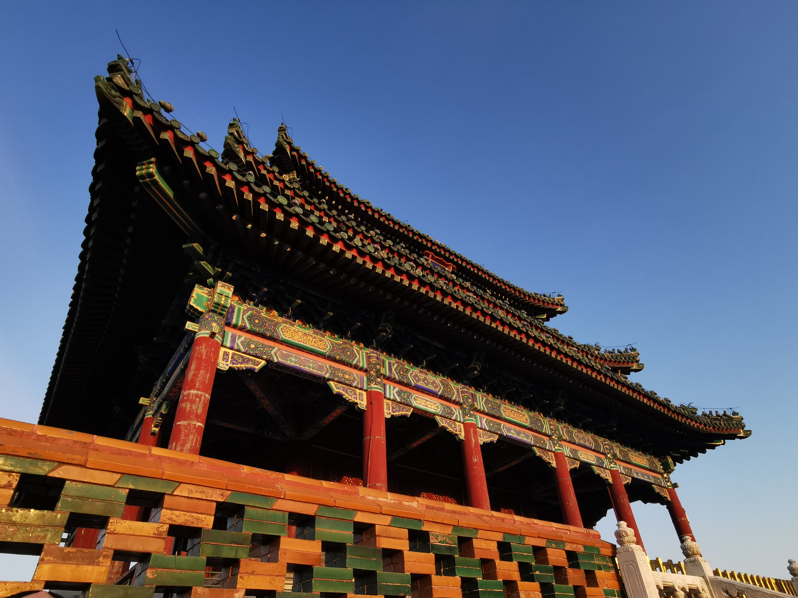
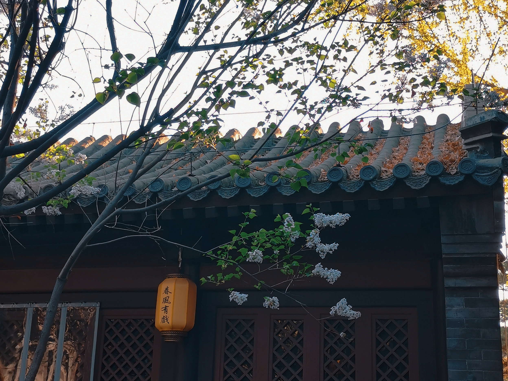
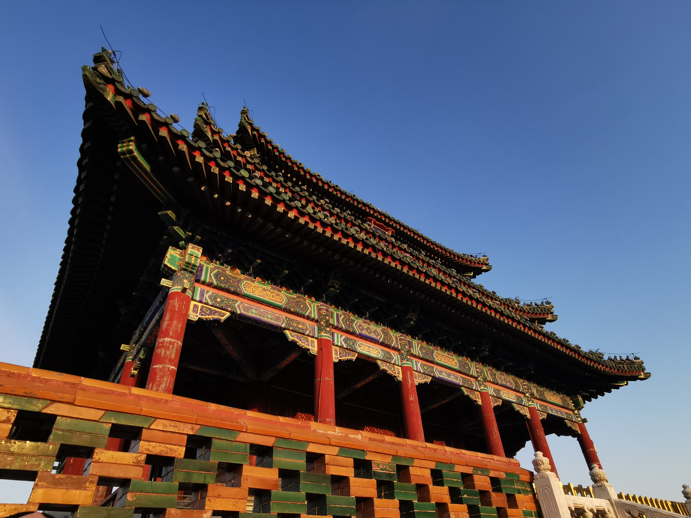
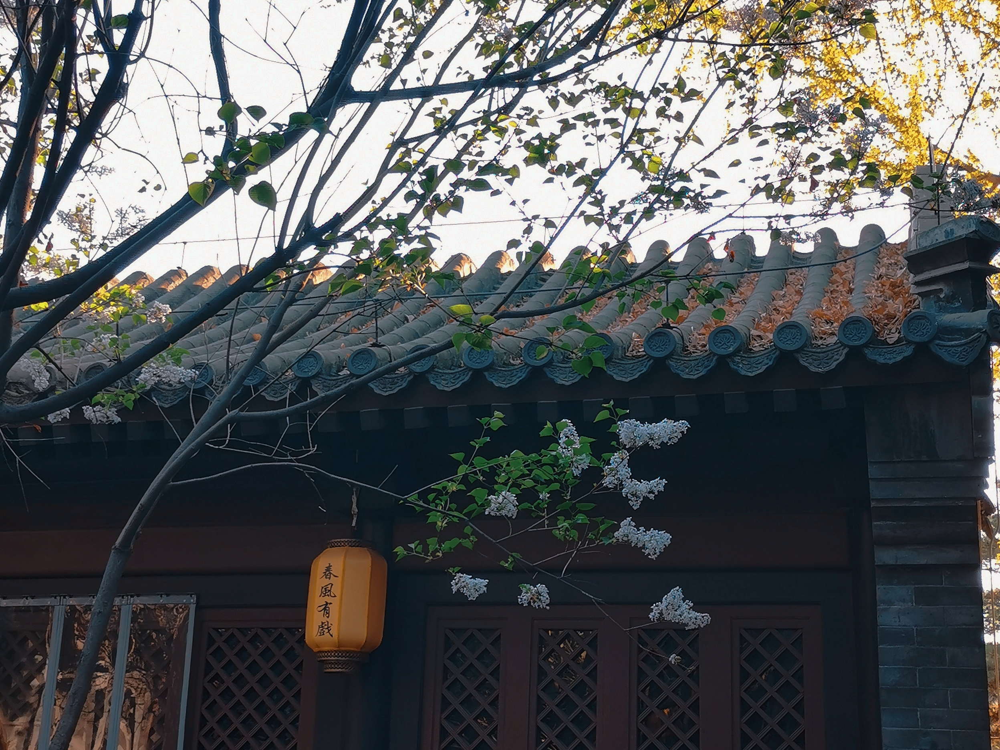

All about my trip
 



四月的北京
今年4月，我于清明假期去了北京旅行。北京这座城市带给我的回忆太多了，这次也毫不例外。这次的旅行主要是为了与朋友一起做一些很有意义的事情， 我们去了长安街骑行、去了石景山公园看日落，去开了卡丁车，在南锣鼓巷的voyage度过了美美的一个下午，也在恍惚抬头间遇见了中国美术馆附近一片艳丽的景色。
北京这座城市带给我的回忆太多了，上了大学以后，如果心情非常糟糕的话，我就会去北京散散心。可能有人奇怪我为什么那么喜欢北京，怎么说呢，在北京的时候， 尽管也有一些摩擦和困难，但是你所感受到的人文是完全不一样的。你脚下踩的每一块砖可能都有几百年的历史。它不仅仅是中国的首都，也是文化中心和艺术中心。北京的展览是真的很多也很漂亮，很庆幸的是，我每次去都能遇见我自己喜欢的展览。北京人给我的感觉是很温和热心的，敞亮。非常建议在晚上的时候开车经过十里长安街，周边的 建筑是真的宏伟又明亮，长安街不愧为中华第一街。
四月的时候，去北京是一个很不错的选择。另外一个很喜欢北京的原因就是它的天气。我的vlog里面几乎记录的全是我在北京的日常，北京不论是寒冬，还是初春，一年到头都是太阳高照，给人的感觉就是暖洋洋的，晴天真的会让心情好很多。 武汉太爱下雨了，我又是一个及其讨厌下雨天的人，下雨的时候路上泥泞，走路会把裤子打湿，鞋也打湿。我们宿舍在一楼朝阴面，本身就潮，再下雨一连下一两个星期，真受不了。但是北方比较干起来的时候，也有人难受的。四月的时候，我们几乎每天睡醒来第一件事就是找水喝， 我其实是一个不怎么爱喝水的人，可能买一瓶矿泉水就喝完上面的圆锥区域。但是在北京那几天，我几乎暴饮水，实在是干的难受，而且每天晚上洗脸的时候，脸也干得生疼。
那北京有哪些值得去的地方呢？太著名的景点例如天安门、故宫、长城这些中国人不得不去的几个地方我就不说了，我给大家推荐一些休闲玩乐的地方。如上文所说，南锣鼓巷的一家名叫Voyage的咖啡馆一定要去，Voyage是近几年才开到北京的，目前中国似乎就北京上海两座城市有。南锣鼓巷的那家在春风书院旁边，景色实在是太美了，旁边有专门的一条小胡同摆设了桌椅可以在那 度过闲暇的下午茶时机。Voyage的咖啡和甜点也是非常nice的，它的咖啡是可以选择豆子的，在点单之前店员就会向你介绍一下豆子的差距。我最爱喝的就是冰拿铁，要零号豆子，再配上他家的提拉米苏，简直是美滋滋。By the way，他家的提拉米苏真的是我这辈子吃过的最好吃的提拉米苏！再一个呢就是建议大家一定要在秋天去一次北京，北京的秋天简直是美到窒息，遍地的银杏叶， 尤其要去香山和奥森公园这几个地方，太美了，让人根本走不动路。希望大家都能够有时间去北京看看～